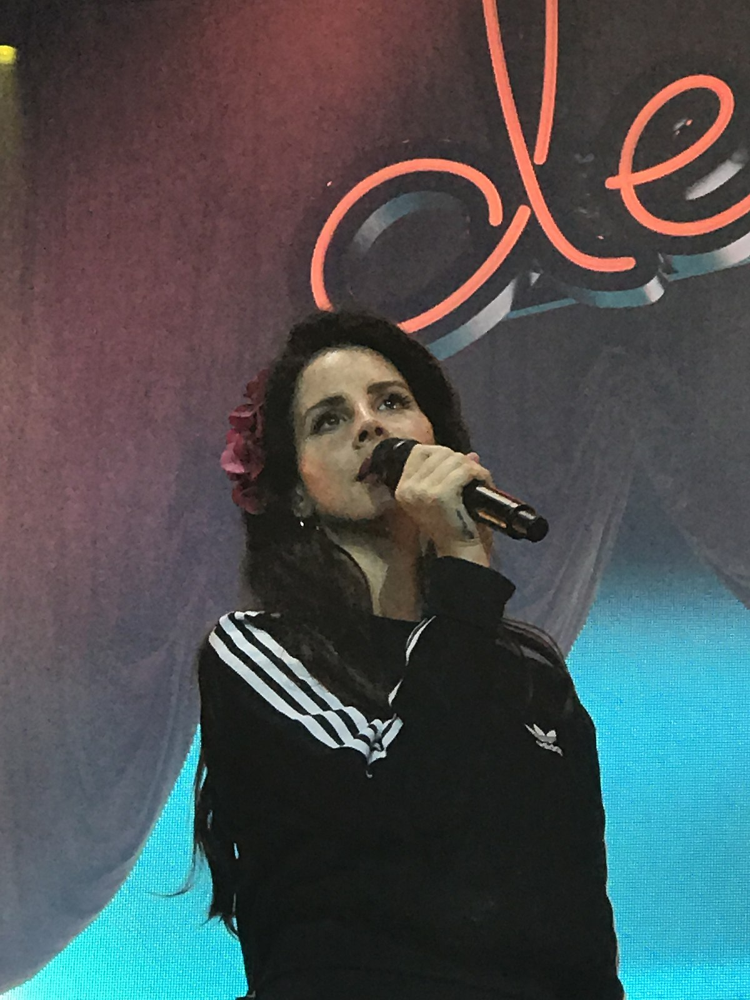
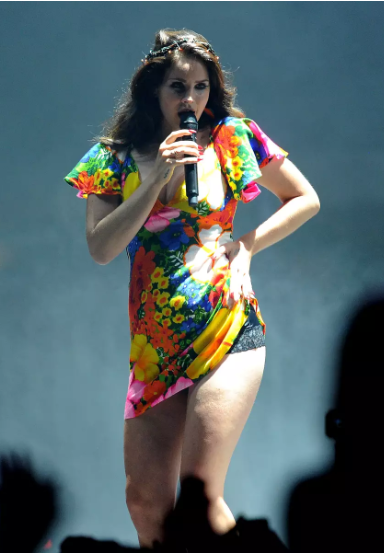

Entre as conquistas de Lana Del Rey, destacam-se o Brit Award de Melhor Artista Feminina Internacional em 2013 e o ECHO Award de Melhor Artista Internacional em 2013 e 2018. Além disso, ela recebeu indicações ao Grammy Awards e ao MTV Europe Music Awards, demonstrando seu impacto e reconhecimento no cenário musical internacional. Sua música envolvente e sua voz única continuam a cativar fãs ao redor do mundo, fazendo dela >uma das artistas mais influentes da atualidade.
 